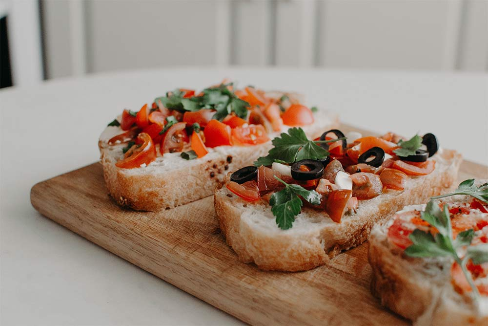
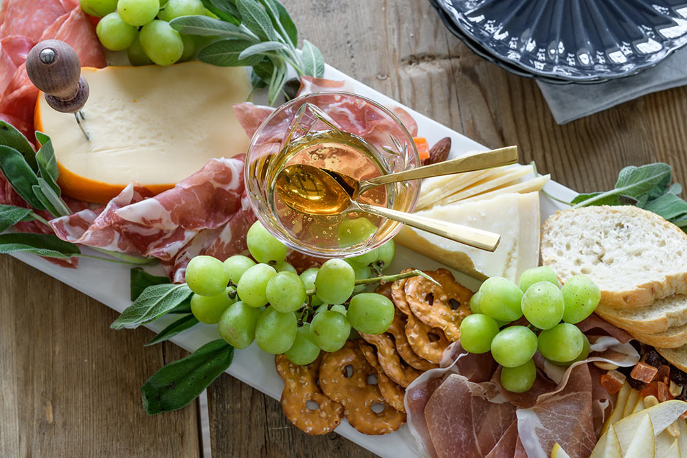
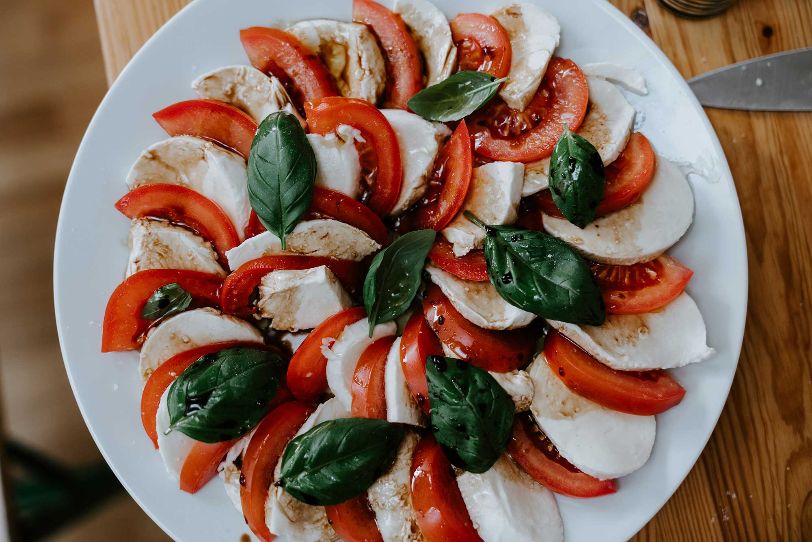
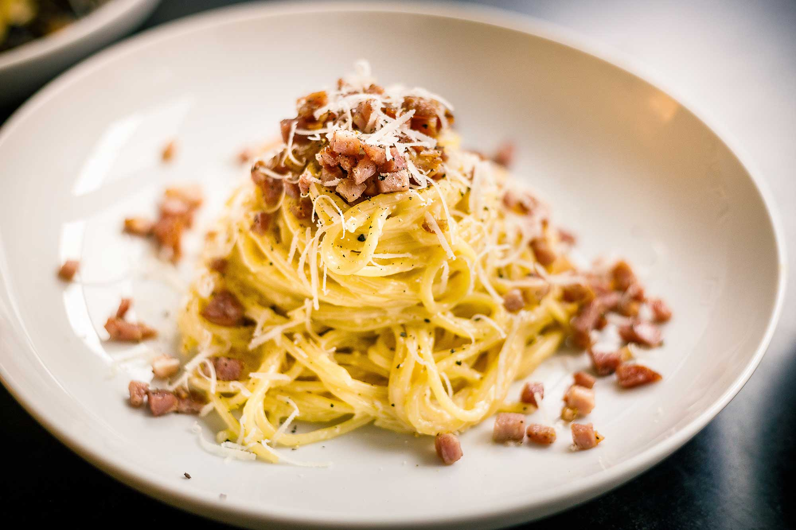
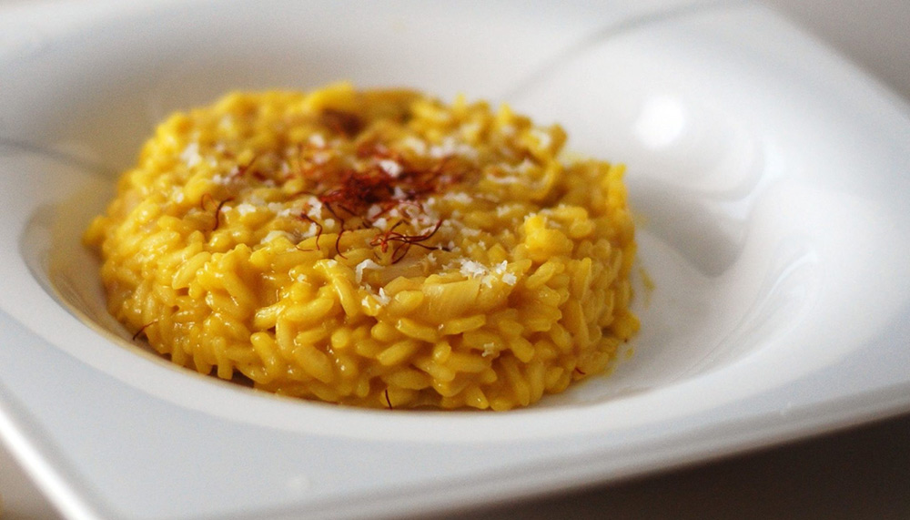
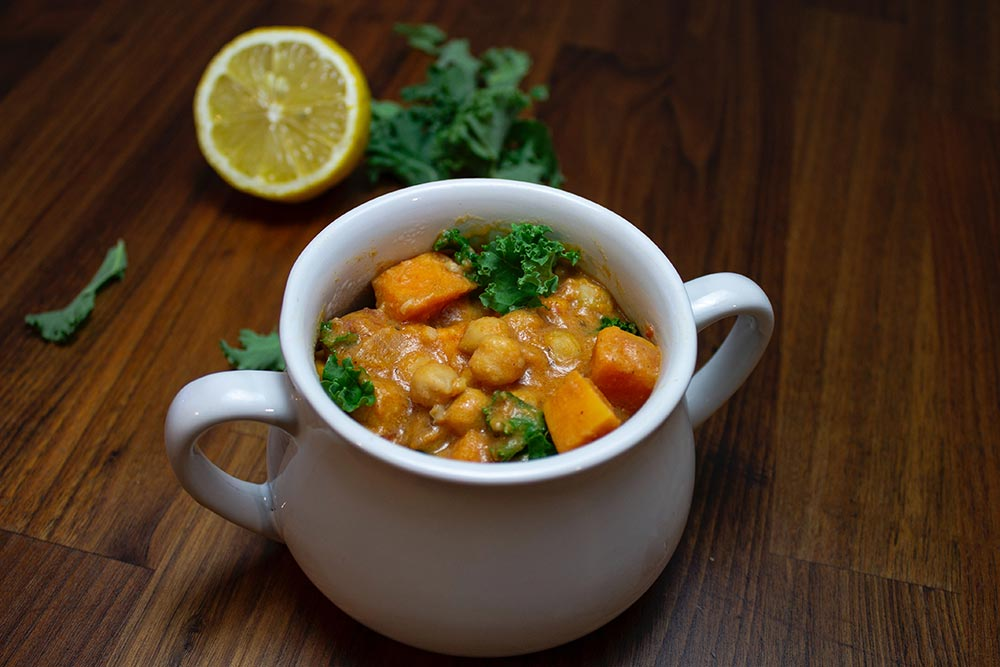
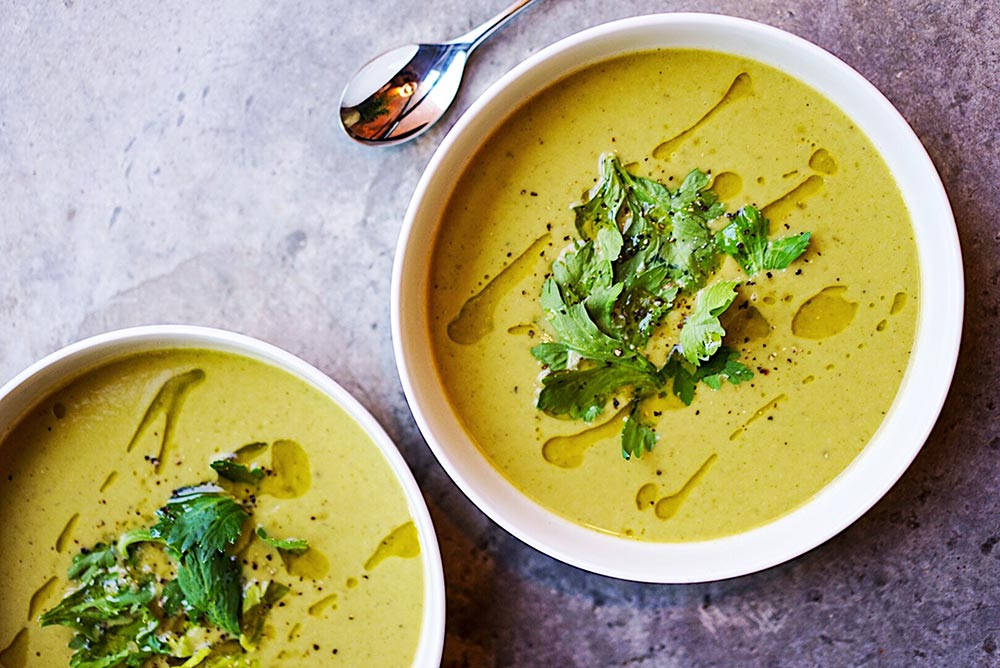
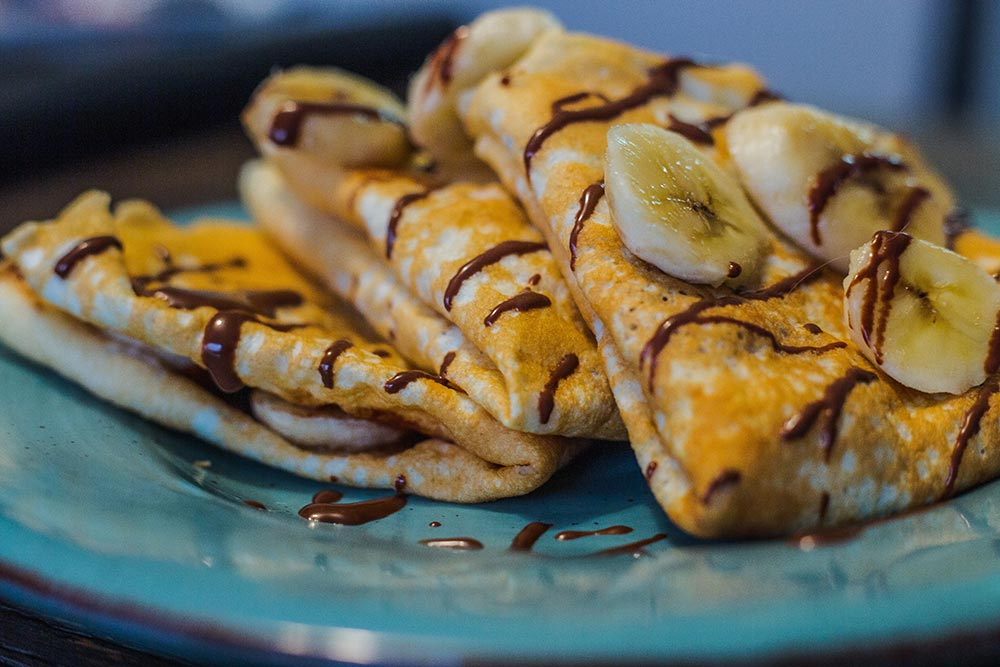
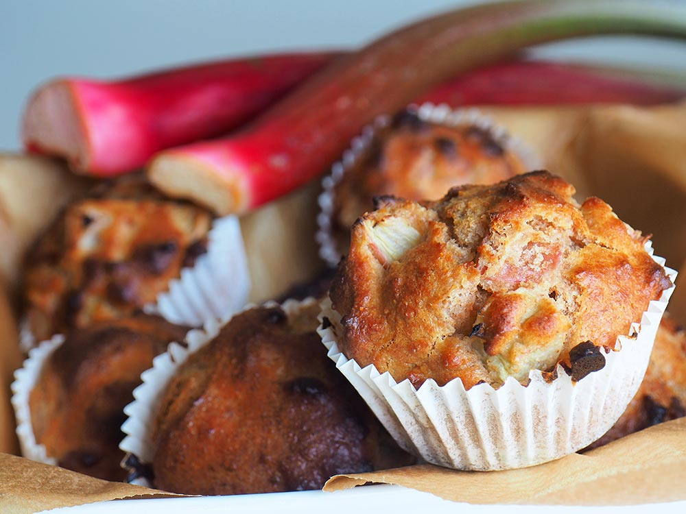

Recipes
STARTERS

Photo by Margarita Zueva on Unsplash
BRUSCHETTA
Ingredients
- Some bread
- Tomatos
- Salt
- Magic
Preparation
- Cut the bread in slices and toast it the pan or in the oven.
- Slice the tomatos and basil, add olive oil and salt to your taste..

CHEESE WITH HONEY
Ingredients
- Some bread
- Acacia Honey
- Ricotta
- Brie
- Blue Cheese
- Parmigiano reggiano
Preparation
- Cut the bread in slices and toast it the pan or in the oven.
- Slice the cheese in small
- Cut the cheese into small portions and place them on a chopping board.
- Prepare small bowls for the honey and enjoy!

Photo by Claudio Schwarz | @purzlbaum on Unsplash
CAPRESE SALAD
Ingredients
- Some bread
- Tomatos
- Mozzarella Cheese
- Fresh Basil
- Salt and black pepper
- Extra-virgin olive oil
- Balsamic glaze
Preparation
- Place the tomatoes and mozzarella on a platter. Arrange tomatoes and mozzarella on a platter in an alternating pattern.
- Top with the basil leaves.
- Season with salt and black pepper. Sprinkle with a generous pinch of flaky salt and several grinds of black pepper, to taste.
- Drizzle with the olive oil and balsamic glaze.
FIRST COURSES

Photo by Rob Wicks on Unsplash
CARBONARA
Ingredients
- Large eggs
- Pecorino Romano cheese
- Bacon
- Spaghetti
- Salt
Preparation
- Bring a large pot of salted water to a boil. Meanwhile, place the eggs, cheese, and salt in a medium bowl and whisk to combine
- Add the spaghetti to the water and cook. Meanwhile, cook the bacon until crisp.
- Drain the pasta and add to the pot with the bacon grease.
- While whisking the egg mixture, while tossing the pasta constantly, slowly pour in the egg mixture.
- Transfer pasta to bowls, sprinkle with the reserved bacon, more cheese and serve very hot.

RISOTTO ALLA MILANESE
Ingredients
- Riso Carnaroli
- Saffron threads
- Onion
- Dry white Wine
- Butter
- Parmigiano reggiano
Preparation
- In a heavy-based saucepan cook the onion in 2 tablespoons of the butter over medium heat until it’s translucent and fragrant.
- Stir in the rice and cook it. Add the wine, 2 cups of broth, and the saffron.
- Cook until most of the liquid has been absorbed. Add another cup of broth and keep cooking.
- When the rice is ready, stir in the cheese. Add a little more broth to give the risotto the consistency you like Season with salt and pepper.

PASTA ALLA NORMA
Ingredients
- Sedanini pasta
- Tomatos
- Eggplant
- Onion
- Salt and black pepper
- Extra-virgin olive oil
- Basilic
Preparation
- Wash the Eggplant, cut them first into slices and then into cubes. Lightly salt them and leave them to drain for a couple of hours.
- Cut the spring onion into slices. Pour the oil into a pan, and add the spring onion. Once it is golden brown, add the aubergines.
- Wash the cherry tomatoes and cut them add them to the eggplant.x
- In the meantime, cook the pasta
and pour it directly into the pan with the aubergines. Serve to taste
SOUP
 Photo by Julia Kicova on Unsplash
Photo by Julia Kicova on Unsplash
POTATOS SOUP
Ingredients
- Some bread
- Potatos
- Onion
- Salt and Pepper
- Milk
Preparation
- Cut the bread in slices and toast it the pan or in the oven. Leave for later to accompany the soup.
- Slice the onion, cook in a sacuepan then add milk and potatoes. Cook until the potatoes until softened, being sure to stir the soup regularly so that the bottom does not burn.
- Then serve it up, loaded up with all of your favorite toppings!

Photo by Weronika Krztoń on Unsplash
VEGETABLE SOUP
Ingredients
- Olive oil
- Carrots
- Garlic
- Eggplant
- Zucchini
- Tomatos
- Salt
Preparation
- Heat the oil in a large soup pot over medium-high heat.
- Add the carrots and onion and cook, stirring occasionally.
- Add the Garlic
- Salt and stir to combine. Add the broth, tomatoes with their juice. Bring to a boil, reduce the heat to medium, cover.
- Season to taste with more salt and spieces to taste

Photo by Megan (Markham) Bucknall on Unsplash
FRESH PEA SOUP
Ingredients
- Sweet peas
- Butter
- Small onion
- Salt and pepper
- Salt and black pepper
- Extra-virgin olive oil
Preparation
- Shuck the peas. In a large saucepan over medium heat, melt the butter.
- Add the onion and sauté until soft, 5 to 6 minutes. Try not to let it brown. Add the stock and salt, raise the heat, and bring the pot to a boil.
- Transfer the peas and some of the liquid to a blender and purée until smooth.
- Serve warm.
DESSERTS

Photo by Delaney Van on Unsplash
NUTELLA CREPES
Ingredients
- Eggs
- Milk
- 00 flour
- Butter
- Nutella
- Icing sugar
Preparation
- Beat the eggs with a fork and add the milk. Mix the ingredients well with a fork.
- In a frying pan greased with a knob of butter. Pour a ladleful of the mixture to cover almost the entire surface of the pan.
- Turn it on the other side until it is golden brown, take a spoonful of Nutella and spread it on the surface of the crepe.
- Fold the crepe and sprinkle with icing sugar and serve your crepe warm.
- Add toppings or fruits to taste.

Photo by Mette van der Linden on Unsplash
MUFFINS
Ingredients
- Eggs
- Sugar
- Yeast
- Milk
- Vanilia
- Flour
- Butter
Preparation
- Melt the butter and leave to cool. In the meantime, combine all the liquid ingredients in a jug.
- Then add sugar, a pinch of salt.
- Place the whisk of an electric mixer in the bowl with the powders and turn it on very low speed while adding the liquid mixture a little at a time.
- Pour about 90 grams of the mixture into 12 ramekins.
- Bake in a preheated oven, in static mode, at 180° for 35 minutes. Enjoy!

COCONUT PRALINES
Ingredients
- Coconut
- Icing Sugar
- Ricotta
Preparation
- Start by sifting the ricotta into a bowl to make it creamier, then add the icing sugar and mix everything together.
- Add coconut and mix again until it is evenly incorporated.
- Transfer it to the palm of your hand and work it into a ball.
- Put them in the refrigerator for about 10 minutes before serving so that they compact.
- Eat and enjoy!